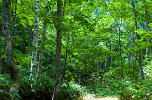
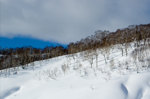
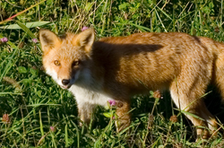

森の工房について
Forest Studioでは、自然の中にある「森の工房」を運営しています。森の工房では、四季を通してイベントを開催したり、さまざまな商品の開発を行っています。
森の中にある工房
 森の工房は、木々のあふれる森の中にあります。森の入口から細い小道を通り、森の奥に進んでください。しばらくすると、森の中にある小さな丘に出てきます。その丘の上にある木造の建物が「森の工房」です。
この丘はちょうど森の中央に位置しており、森の中を散歩したり、自然の中で遊んだりするときにも、ちょうどいい拠点になります。森全体を見渡すことも可能で、夜は満点の星空を満喫できます。
四季を楽しむことができる場所

森の工房では、春、夏、秋、冬と、四季折々の自然を楽しむことができます。
春には、雪解け水の中から芽を出す新しい命や、新緑の鮮やかな緑。夏には、緑濃く茂った木々の間を吹き抜けるさわやかな風に、川の清流での水遊び。秋には、森全体が赤や黄色に染まり、色鮮やかな紅葉に包まれます。木々の葉が落ち、冬になると、ここは雪に覆われて一面の銀世界になります。
工房のまわりにいる動物たち
 工房のまわりにはいろいろな動物たちが棲んでいます。キツネ、タヌキ、イタチ、ウサギ、リス、シカ、イノシシ…。森の中で出会うこともあれば、ひょこっと工房に顔を出すこともあります。土や雪の上に残った足跡から、正体を探るのも楽しみです。
ただし、森の工房では彼らに餌をやることはしていません。自然にあるがままの姿で、いっしょに生活していきたいと考えているからです。彼らに出会ったときには、びっくりさせないように遠くからそっと眺めてあげてください。